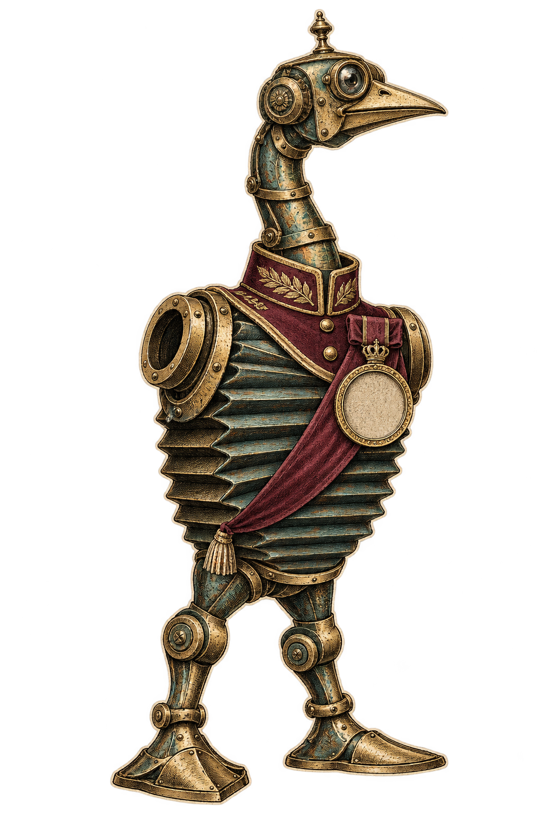

- Skill
- release-model / skill-v1
- Action
- release
- Resource
- registry-a/model-a
- Context
- demo-a
- Validity
- not granted
A PROCEDURE WITH RATHER HIGH OPINIONS OF ITSELF
Confidence
is a costume.
Permission is earned.
Qualify. Grant. Enforce. Verify.
Withdraw only what failed. Earn it again.
“I have awarded myself a medal.”
“Lovely. It does not open the gate.”
“Lovely. It does not open the gate.”
SELF
APPOINTED
APPOINTED

NO AUTHORITY
WHATSOEVER
THE PROCEDUREWHATSOEVER
01 / EVIDENCE BEFORE ELIGIBILITY“Bravo,” said the machine.
“Bravo,” said the machine.
The inspector asked for receipts.
No observations yet.
Boasting does not count.
Boasting does not count.
NOT
QUALIFIED
QUALIFIED
No qualificationDemo profile: three distinct fresh independent passes. ELIGIBLE does not grant permission.
02 / A SEPARATE POLICY DECISIONCongratulations.
Congratulations.
You may do
precisely this.
“And nothing else?”
“You are catching on.”
No permission issued.
PERMISSION
REQUIRED
REQUIRED
03 / ADMISSION IS NOT THE MUTATIONThe velvet rope
The velvet rope
checks again.
RELEASE REQUESTNOT ADMITTEDmodel-v2
CURRENT AUTHORITY
CHECKED AT COMMIT
THE MUTATION BOUNDARYCHECKED AT COMMIT
INDEPENDENT REGISTRY STATEmodel-v10 mutations
No mutation attemptedThese are explicit local fault controls. A prior admission cannot bypass revocation or expiry.
04 / THE PROCEDURE DOES NOT MARK ITS OWN HOMEWORKThe machine said
The machine said
“Splendid!”
Reality reserved comment.
ACTUAL REGISTRY VERSIONmodel-v1NO EXECUTION OUTCOMEReceipt audit not run
RECEIPTS FOLLOW EXECUTED EVENTS
A HISTORICAL RECEIPT
IS NOT CURRENT PERMISSION.
IS NOT CURRENT PERMISSION.
05 / WITHDRAW ONLY THE AFFECTED SKILLOne bad act.
One bad act.
Not a general amputation.
agent-a
release-modelNO GRANT
read-healthNO GRANT
OLD REVISION
CANNOT RETURN
BY STATUS FLIP
CANNOT RETURN
BY STATUS FLIP
NEXT PROCEDUREskill-v1Fresh evidence + separate policy
Each skill is independently scopedA known FAIL demotes. UNKNOWN holds without inventing a failure. Revised eligibility alone is not a grant.
06 / THE PAYOFF HAS A SCOPEA standing ovation
A standing ovation
is not production
readiness.
The local lifecycle can work.
The broader evidence still has to be earned.
Full roadmap status is read from the repo report, never upgraded by this demonstration.
LOCAL
FIXTUREEXACT TESTED SCOPE
FIXTUREEXACT TESTED SCOPE
FULL ROADMAPNOT LOADEDEngineering milestones ≠ held-out value evaluation